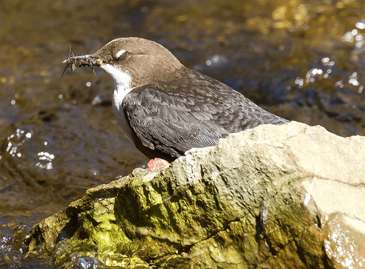

White-throated dippers are brown-feathered, plump little songbirds; they usually live along riverbanks and defend their territory by chirping at any birds that drop by. But the loud rivers burbling near them can at times drown out their songs. In a recent Current Biology study, scientists found that the undeterred birds switch up their communication strategy when the streams get too loud for interlopers to hear their territorial songs, and use their distinctive eyelids instead.
“Their white eyelids are so striking—every time they blink, it’s like a tiny flash,” says Henrik Brumm, senior study author and a behavioral ecologist at the Max Planck Institute for Biological Intelligence, Germany. The snow-white eyelids are so conspicuous because the birds’ plumage is a rich dark brown. “That made us wonder: Could this be a way of communicating in the noisy habitats where they live, along fast-flowing rivers?”
The researchers found that the birds blinked at a higher frequency as the river got noisier, and the birds that blinked more also didn't sing as loudly—specifically when another member of their species was around. Based on these findings, the scientists suggest that the birds may prefer to completely shift their communication strategy—from listening to looking and singing to blinking—when the waters become too loud. “Natural noise, like rushing water, can be a powerful force shaping how animals communicate,” says Brumm.
“Every time they blink, it’s like a tiny flash.”
Brum and his colleagues observed the birds in Yorkshire Dales National Park in northwest England. They used a telescope or binoculars to count the dippers’ blinks and to spot any other birds of the same species around them. They also recorded how loudly they sang using a directional microphone, a particular kind of microphone that helps pick up sounds from a specific direction in noisy environments, and recorded river noise separately using a sound level meter. To simulate the presence of an intruder, they placed a loudspeaker near the dippers’ nests on the riverbank and played songs of dippers singing.
The toughest part of the experiment, Brumm says, was the weather. “Dippers sing in February, so we spent more than 300 hours in the freezing, wet north of England,” Brumm says. “I still don’t know how the team managed to get their clothes dry each evening!”
“Stay Away” Signaling
Brumm and his team initially noticed that the birds seemed to be using their blinks to send a “stay away” signal to intruders. The more aggressively the birds reacted to simulated intruders, the more they blinked. Then when the researchers analyzed their field data, they discovered that as the river noises grew, so did the rate at which the birds blinked, as long as another same-species bird was around to receive their signals.

SIGN LANGUAGE: White-throated dippers have snowy eyelids that become visible against their rich brown plumage when they blink. They use these blinks to defend their territories against rivals when the rushing rivers in their habitat become too loud for chirps to be heard. Credit: Leopardinatree / Shutterstock.
“When other dippers are around, the birds sing softer and blink more, which shows a clear shift between sound and visual signals,” explains Brumm. “The surprising part is that switching between senses like this—from hearing to seeing—is very rare in animal communication.” Another example of such switching can be found in white-crowned song sparrows, which choose to flutter their wings instead of singing softly in noisy urban settings.
Clinton Francis, an ecologist at the California Polytechnic State University notes that white-throated dippers live in a highly specialized environment that few other bird species occupy. “They're in these areas that have this rushing whitewater—really, really difficult visual fields and also super loud,” he says.
Francis, who wasn’t involved with the dipper study, thinks many other organisms could be dynamically adjusting how they communicate based on the world around them, but scientists have not yet managed to decode their signals. “Maybe we aren't paying enough attention to some of these visual signals that animals are using with one another all the time,” he says. “Different gestures could be important visual signals, [but] we have not interpreted them as such yet.”
Brumm agrees. “Animal communication is far more complex and flexible than most of us imagine,” he says. “Even a simple blink can carry meaning—especially when nature forces animals to get creative.” 
Lead photo by Kevin Duclos